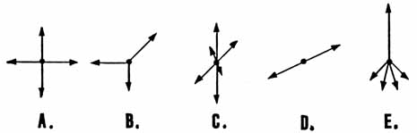

SLIDE 9.
SUPERPOSITION DOES NOT
ELIMINATE
THE VIRTUAL SUBSTRUCTURE

| TWO OR MORE
MACROSCOPICALLY "EQUAL" VECTORS OR SCALARS CAN DIFFER
DRASTICALLY IN THEIR VIRTUAL SUBSTRUCTURE DISTRIBUTIONS. EVEN TWO
"ZEROS" MAY BE DYNAMICALLY DIFFERENT DUE TO THEIR DIFFERING
SUBSTRUCTURES.
Next we show some
simple substructures of a zero vector. All of these vector systems
sum to zero vectorially. Note that if we superpose two of these
structures, all substructure vectors are still present., and the vector
summation is still zero. |